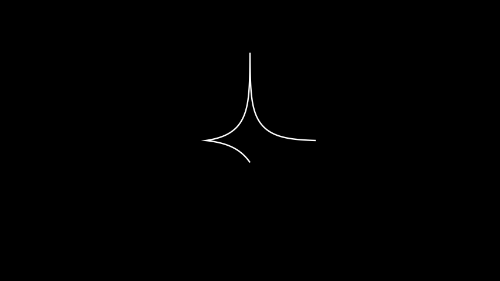

Polygonal Chain¶
- class PolygonalChain(*native_anchors: Point, plane: PolarPlane, using_geodesic: bool = True, **kwargs)[source]¶
A path of
hmanim.poincare.point.Pointobjects where two consecutive points are connected by the geodesic line segment between them.Examples
Example: PolygonalChainExample ¶
from manim import * from hmanim.native import Point, PolygonalChain class PolygonalChainExample(Scene): def construct(self): # The plane that all our hyperbolic objects live in. plane = PolarPlane(size=5) # Draw the polygonal chain. chain = PolygonalChain( *[ Point(3.0, 0.0), Point(4.0, TAU / 4), Point(2.0, TAU / 2), Point(1.0, TAU * 3 / 4), ], plane=plane ) self.add(chain)
from hmanim.native import Point, PolygonalChain class PolygonalChainExample(Scene): def construct(self): # The plane that all our hyperbolic objects live in. plane = PolarPlane(size=5) # Draw the polygonal chain. chain = PolygonalChain( *[ Point(3.0, 0.0), Point(4.0, TAU / 4), Point(2.0, TAU / 2), Point(1.0, TAU * 3 / 4), ], plane=plane ) self.add(chain)- copy() PolygonalChain[source]¶
Create and return an identical copy of the
Mobjectincluding allsubmobjects.- Returns:
The copy.
- Return type:
Mobject
Note
The clone is initially not visible in the Scene, even if the original was.
- rotated_by(angle: float) PolygonalChain[source]¶
Rotate the polygonal chain around the origin by a given angle in radians.
- Parameters:
angle (float) – The angle to rotate by.
- Returns:
The rotated polygonal chain.
- Return type:
- set_center_of_projection(point: Point) PolygonalChain[source]¶
Set the center of projection of the polygonal chain.
- Parameters:
point (hmanim.native.point.Point) – The new center of projection.
- Returns:
The polygonal chain with the new center of projection.
- Return type:
- set_curvature(curvature: float) PolygonalChain[source]¶
Set the curvature of the hyperbolic plane that the polygonal chain lives in.
- Parameters:
curvature (float) – The new (negative) curvature.
Note
Affects only the polygonal chain object itself and not the other objects associated with the corresponding hyperbolic plane.
- Returns:
The polygonal chain with the new curvature.
- Return type:
- set_native_anchors(native_anchors: Sequence[Point])[source]¶
Change the corner
hmanim.poincare.point.Pointobjects that make up the polygonal chain.- Parameters:
native_anchors (Sequence[hmanim.native.point.Point]) – The new corners.
- translated_by(distance: float) PolygonalChain[source]¶
Translate the polygonal chain by a given distance. See
Point.translated_by()for more details.- Parameters:
distance (float) – The distance to translate by.
- Returns:
The translated polygonal chain.
- Return type:
- class PolygonalChainRotate(mobject=None, *args, use_override=True, **kwargs)[source]¶
Rotate a polygonal chain around the origin by a given angle.
Examples
Example: PolygonalChainRotateExample ¶
from manim import * from hmanim.native import Point, PolygonalChain, PolygonalChainRotate class PolygonalChainRotateExample(Scene): def construct(self): # The plane that all our hyperbolic objects live in. plane = PolarPlane(size=5) # Draw the polygon. chain = PolygonalChain( *[ Point(3.0, 0.0), Point(4.0, TAU / 4), Point(2.0, TAU / 2), Point(1.0, TAU * 3 / 4), ], plane=plane ) self.add(chain) # Translate the circle self.play( PolygonalChainRotate( chain, angle=TAU / 4, ) )
from hmanim.native import Point, PolygonalChain, PolygonalChainRotate class PolygonalChainRotateExample(Scene): def construct(self): # The plane that all our hyperbolic objects live in. plane = PolarPlane(size=5) # Draw the polygon. chain = PolygonalChain( *[ Point(3.0, 0.0), Point(4.0, TAU / 4), Point(2.0, TAU / 2), Point(1.0, TAU * 3 / 4), ], plane=plane ) self.add(chain) # Translate the circle self.play( PolygonalChainRotate( chain, angle=TAU / 4, ) )- interpolate_mobject(alpha: float)[source]¶
Interpolates the mobject of the
Animationbased on alpha value.- Parameters:
alpha – A float between 0 and 1 expressing the ratio to which the animation is completed. For example, alpha-values of 0, 0.5, and 1 correspond to the animation being completed 0%, 50%, and 100%, respectively.
- class PolygonalChainTranslate(mobject=None, *args, use_override=True, **kwargs)[source]¶
Translate a polygonal chain horizontally by a given distance.
Examples
Example: PolygonalChainTranslateExample ¶
from manim import * from hmanim.native import Point, PolygonalChain, PolygonalChainTranslate class PolygonalChainTranslateExample(Scene): def construct(self): # The plane that all our hyperbolic objects live in. plane = PolarPlane(size=5) # Draw the polygonal chain. chain = PolygonalChain( *[ Point(3.0, 0.0), Point(4.0, TAU / 4), Point(2.0, TAU / 2), Point(1.0, TAU * 3 / 4), ], plane=plane ) self.add(chain) # Translate the polygonal chain. self.play( PolygonalChainTranslate( chain, distance=3 ) )
from hmanim.native import Point, PolygonalChain, PolygonalChainTranslate class PolygonalChainTranslateExample(Scene): def construct(self): # The plane that all our hyperbolic objects live in. plane = PolarPlane(size=5) # Draw the polygonal chain. chain = PolygonalChain( *[ Point(3.0, 0.0), Point(4.0, TAU / 4), Point(2.0, TAU / 2), Point(1.0, TAU * 3 / 4), ], plane=plane ) self.add(chain) # Translate the polygonal chain. self.play( PolygonalChainTranslate( chain, distance=3 ) )- interpolate_mobject(alpha: float)[source]¶
Interpolates the mobject of the
Animationbased on alpha value.- Parameters:
alpha – A float between 0 and 1 expressing the ratio to which the animation is completed. For example, alpha-values of 0, 0.5, and 1 correspond to the animation being completed 0%, 50%, and 100%, respectively.